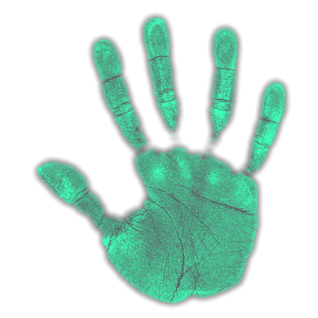

| Jinn |
|---|
|  | 
|

|
|---|
- During a hunt, when a Jinn enters the "chasing" mode by spotting a player, it will travel to them at a higher speed of 2.5 m/s, until they are within 2 metres of the player. They will then pursue the player at the standard ghost speed.
- For the Jinn to be able to use its abilities, the fuse box must be turned on. If the fuse box is not turned on, it cannot use either ability. Whether there are lights turned on or not does not affect this.
- A Jinn cannot turn off a breaker directly through interacting with it. It can still turn it off indirectly by turning on a light to exceed the limit on the number of lights that can be turned on.
| ____________________________________________________________________________ |
|---|